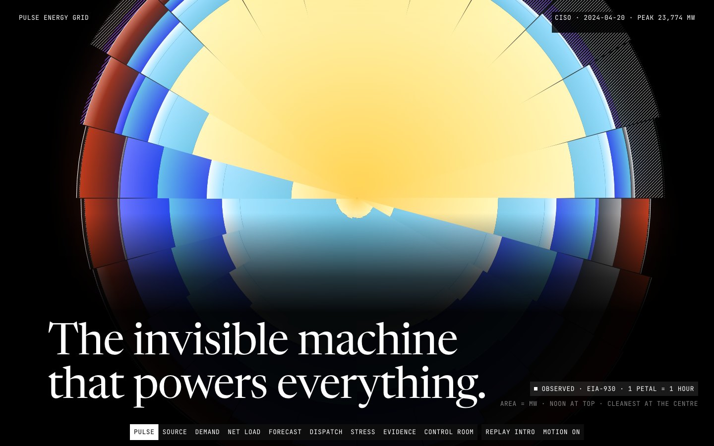

Data story · Python pipeline · In-browser optimisation · 2026-10
The Invisible Machine That Powers Everything
Real hourly demand, generation and day-ahead forecasts for two US grids, a strict-split forecast benchmark against the grid's own published forecast, and a 24-hour dispatch model you can re-solve in your browser.

Source: U.S. Energy Information Administration (EIA-930, public domain) and NOAA ISD (public domain), transformed and aggregated here. The IEEE 14-bus topology (pglib-opf, CC BY 4.0) is illustrative and never the real grid. Dispatch costs, prices and emissions are SIMULATED under assumed costs and capacities on a single-node model; they are not market prices.
01 — The problem
A power grid must match supply to demand every hour with no inventory. Two things decide whether it does so cheaply and cleanly: how well tomorrow's demand can be predicted, and how generators and storage are dispatched against it hour by hour.
The questions: for California (CISO) and Texas (ERCOT), can an independent weather-aware model beat the balancing authority's own day-ahead forecast, and if it does not, can the site say so? And what does the cheapest 24-hour schedule look like on a real day, and how does it move when renewables, demand, a battery or an outage change?
02 — What I built
An offline pipeline and a static site joined by a contract.
- Pipeline: EIA-930 streamed once from a 695 MB archive, NOAA hourly weather at population-weighted airport stations, a complete UTC grid of 40,776 hourly slots per series with every excluded row accounted for, and 13 JSON artifacts with a JSON Schema each.
- Analytics: a strict temporal split with a no-leakage test, gradient-boosted demand forecasts with conformal 80% intervals, and a time-coupled dispatch LP with a battery solved by HiGHS.
- Site: a scroll story around the Day Rose, a 24-petal form where each hour's stack of generators fills the clock, and a control room that re-solves the LP in the browser with HiGHS WebAssembly in a worker.
Every figure carries an honesty tag: OBSERVED, DERIVED, PREDICTED, SIMULATED or SYNTHETIC.
03 — How it was built
- 01
Account for every row
EIA and NOAA files are reduced to a complete hourly UTC grid for 2021-01-01 to 2025-08-26. For each series, grid slots equal raw rows plus missing, and raw rows equal kept plus null plus flagged. Gaps of at most 3 hours are filled and flagged, and never used as forecast targets.
- 02
Forecast with a strict split
Train, validation and test are disjoint in time and a test nulls every observation after a row's forecast origin to prove the features do not change. Models are compared with the grid's own EIA day-ahead forecast, a debiased version of it and a seasonal naive baseline.
- 03
Report where the independent model loses
In CISO the gradient-boosted model has test MAPE 3.30% against 6.50% for EIA's forecast, but that series drifted to a bias of -6.36% by 2025, so part of the win is a data-definition effect. In ERCOT, EIA's forecast (2.23%) beats the independent model (4.12%).
- 04
Dispatch as a linear program
A single-node 24-hour LP with generator classes, a battery and a value of lost load picks the cheapest schedule on real observed days. Costs and capacities are assumptions (SIMULATED). Reported cost equals the HiGHS objective, battery state of charge stays in bounds, and the power balance holds every hour, all tested.
- 05
Run the same LP in the browser
The browser builds the same LP text as Python and solves it with HiGHS WebAssembly served from the site itself. A parity set of 108 vectors checks the objective, with prices compared only where they are comparable. If the solver cannot load, the site shows the precomputed result and labels it PRECOMPUTED.
04 — Results
Data. CISO mean demand is 25,244 MW with a midday net-load minimum that fell from 3,362 MW (2021) to 253 MW (2024); ERCOT peaked at 85,544 MW on 2024-08-20. The 80% conformal interval covers 82.9% (CISO) and 86.2% (ERCOT) of test hours.
Forecast. CISO: the gradient-boosted model has test MAPE 3.30% against 6.50% for EIA's day-ahead forecast (49% skill). ERCOT: EIA's forecast wins, 2.23% against 4.12% (-85% skill), and the site says so.
Measured on the live site. Lighthouse x3 against the public URL: mobile performance 0.97 to 0.99, LCP 1.7 to 1.9 s, CLS 0, accessibility 1.00; desktop performance 1.00, LCP 0.37 to 0.43 s. At 1440 and 390 wide: 20 requests, 0 failed, 0 console errors, 0 external hosts. Tests: pytest 81, Vitest 74, Playwright e2e 137 passed in the full run plus the 4 tests that failed there, fixed and rerun green (data-timing, collision, contrast and reduced-motion walks included). Real-GPU frame pacing p95 10.1 ms in the first independent QA pass. Three independent QA passes found and closed the majors listed in the repo's QA_REPORT; the final fixes were checked by a single-reviewer read of the changed frames, not a fresh independent pass.
05 — What I'd do next
- Add weather forecasts as an input to the comparison, which would make the match against EIA's forecast fair.
- Extend the dispatch model to unit commitment and a real network.
- Replace the ERCOT model, which loses to the grid's own forecast, with a stacked ensemble that the evidence already hints at (2.20% MAPE).